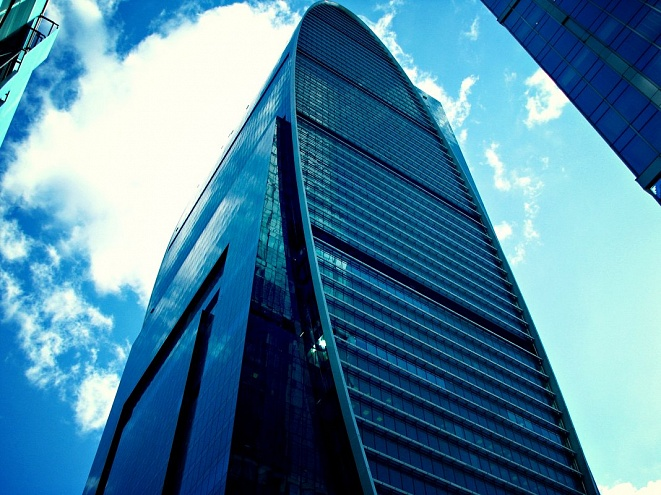

Комплекс Империя
Imperia Tower — зеркальный шедевр от архитектурного бюро NBBJ

Характеристики
- Высота:239 м
- Годы строительства:2006-2011
- Девелопер:Solvers Estate
- Застройщик:ENKA
- Общая площадь:203 191 м²
- Скорость лифтов:7 м/с
- Количество этажей:60 и 18
- Количество машино-мест:349
- Инфраструктура:2 315 м²
- Апартаменты:45 376 м²
- Участок:4
Архитектурный шедевр от NBBJ
Футуристическая архитектура зеркального сооружения Imperia Tower стала одним из шедевров всемирно известного американского архитектурного бюро NBBJ. Перед архитекторами стояла интересная и амбициозная задача: разработать концепцию и дизайн здания, которое не будет похоже ни на одно в мире. И им удалось добиться исключительной гармонии между элегантным эллипсовидным профилем башни и элементами прогрессивного хай-тек, отражающими минимализм и динамичность стиля.
🪞 Инновационный фасад
Фасады здания выполнены из светопрозрачных навесных конструкций — алюминиевых профилей с однокамерными стеклопакетами, с мягким селективным покрытием, заполненных аргоном. Преимущества такого покрытия — защита от ультрафиолетового излучения, эффективная тепло- и шумоизоляция.
📐 Функциональная планировка
Функциональные решения коснулись внутреннего пространства зданий. В его основе лежит принцип свободной планировки, который позволяет максимально эффективно использовать помещения комплекса. Максимальной эффективности использования помещений способствует и прямоугольная форма этажей с внутренним шагом колон от 7,2 до 8,1 м. Нагрузка на перекрытия составляет 530 кг/м².
🏨 Два корпуса — одна концепция
«Империя II» спроектирована в виде двух корпусов с различными функциями на общем стилобате: в корпусе А, ориентированном на набережную, разместится гостиница на 283 номеров и 242 апартамента, а в корпусе Б – офисы. Здание запроектировано в форме трапеции с внутренним открытым двором.
Как добраться
📍 Адрес: Пресненская набережная, 4, Москва
🚇 Метро: Выставочная, Международная, Деловой центр